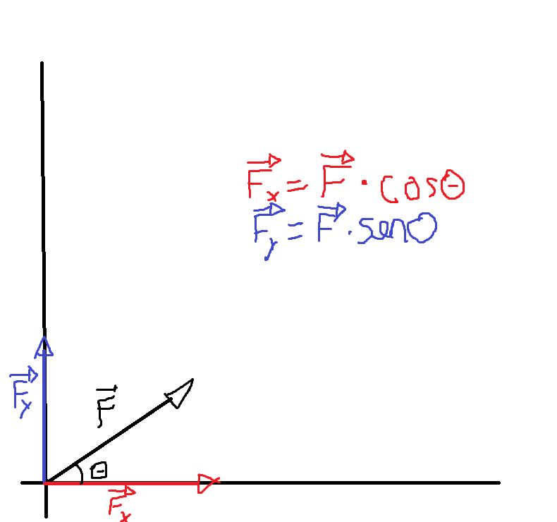

Conceito
As Leis de Newton e suas aplicações buscam analisar as forças exercidas nos objetos.São três leis de Newton,são elas
Primeira Lei de Newton:Inércia
A lei da inércia diz que todo objeto que está parado tende a ficar parado ou se o objeto está em movimento ele tende a ficar em movimento até que uma força interfira
Segunda Lei de Newton:Força resultante
A lei da força resultante diz que a resultante de todas a forças é igual a massa vezes a aceleração,ou seja F=m.a
Terceira Lei de Newton:Ação e reação
A lei da ação e reação diz que:"toda ação tem uma reação",ou seja,sempre que é aplicada uma força contra um corpo,o corpo devolve uma força de mesmo modulo e direção,porém em sentido oposto.
Aplicações
Com base nessas três leis de Newton pode-se perceber algumas aplicações:
Força peso
A força peso nada mais é do que a massa de um corpo acelerada pela aceleração da gravidade,ou seja,
Fp=m.g,onde Fp->Força peso,m->massa,g->aceleração da gravidade.
Essa força gera uma outra força chamada de força Normal que é reação do plano com a força peso
Componentes de uma força
Uma força aplicada na diagonal tem duas componentes,uma em x e outra y.Veja o esquema a seguir:
Sistema em equilíbrio
Um sistema em equilíbrio se consiste em um sistema onde as forças resultante em x e y são igual a 0.